L’objectif de ce module de formation est d’apporter un ensemble de connaissances relatives aux pompes et aux ventilateurs. Ce module présente les grandes classes de ces équipements que l’on rencontre dans les usines d’incinération d’ordures ménagères.
Le rôle des pompes est d’assurer la circulation ou l’injection des fluides dans une installation. La pompe alimentaire assure par exemple la circulation d’eau depuis le réservoir d’eau alimentaire jusqu’au ballon de la chaudière vapeur. En ce qui concerne le traitement d’eau, des pompes de dosage injectent de manière précise et sous des pressions très élevées les produits de conditionnement.
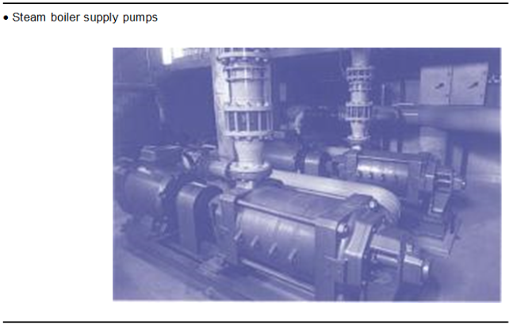
Fig. 1
On distingue différents types de pompes dans les installations :
On utilise les pompes centrifuges pour les applications suivantes :
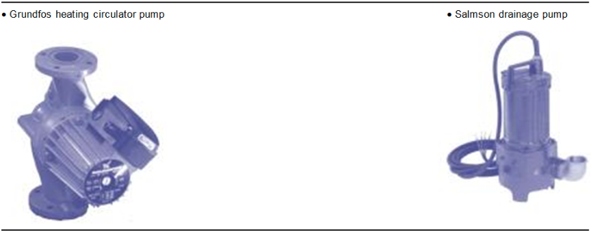
Fig. 2
Le moteur d’entraînement de la pompe peut être :
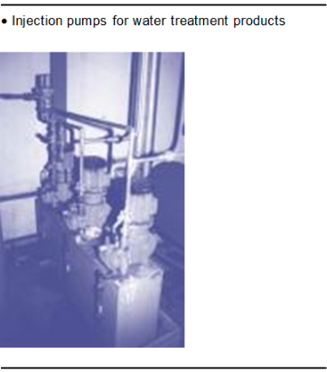
Fig. 3
PompesOn utilise les pompes volumétriques pour les applications suivantes :
Elle est intégrée dans la ligne de distribution du fuel au gicleur sur les brûleurs de petites puissances (cf. module 7, « Les brûleurs »).
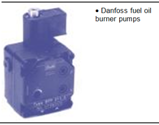
Fig. 4
La pompe est principalement composée :
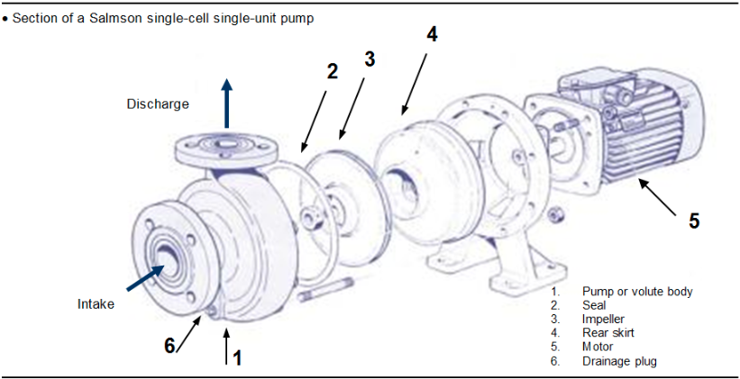
Fig. 5
Garnitures d’étanchéité des pompesPour assurer l’étanchéité entre l’arbre tournant et le corps de pompe, les constructeurs utilisent des garnitures mécaniques ou des tresses.
TressesLes tresses, ou joints, sont découpées en anneaux adaptés aux dimensions de l’arbre. Ces anneaux sont placés dans une boîte ou presse étoupe où elles sont légèrement écrasées par un serrage précis. La qualité du serrage est évalué en fonction du débit de fuite d’eau continu (équivalent à un très fin filet d’eau qui doit tendre à être un goutte à goutte) au niveau de l’arbre. Cette fuite est nécessaire au refroidissement de l’arbre et à la lubrification des surfaces en frottement (arbre et corps de pompe).
Un serrage trop important entraîne une usure importante de ces surfaces et une fuite plus importante. On surveillera donc le débit de fuite et la température de l’eau rejetée, au maximum à 60 °C selon les recommandations du constructeur.
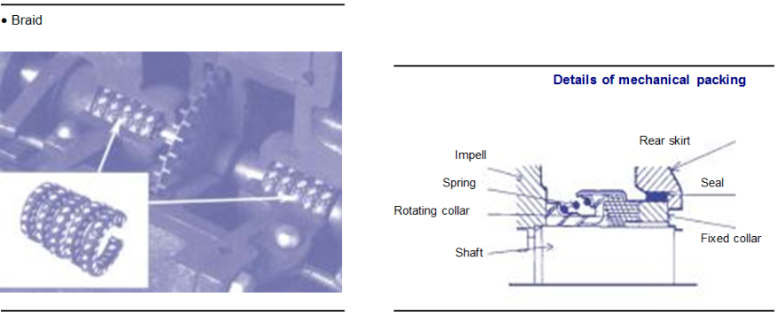
Fig. 6
Tresse mécaniqueContrairement aux tresses, les garnitures mécaniques permettent une étanchéité quasi parfaite et l’entretien est nul. La durée de vie est plus importante car l’usure est moindre.
Les garnitures sont composées de deux bagues étanches. L’une est solidaire de l’arbre et tournante ; l’autre, solidaire du corps de pompe et fixe. Elles sont reliées par un ressort qui assure le rattrapage de l’usure des bagues. Elles permettent les fonctionnements à haute température et haute pression.
Les différents types de rouesLes roues de pompes diffèrent selon la nature des fluides pompés, fluides chargés comme les eaux usées ou fluides clairs comme les eaux de chauffage. La roue met en jeu le principe de la force centrifuge.
L’eau pénètre au centre parallèlement à l’axe de rotation de la roue de la pompe. Elle est mise en rotation par les aubes de la roue et est projetée à grande vitesse vers la périphérie sous l’effet de la force centrifuge. L’énergie contenue sous forme de vitesse est transformée en énergie de pression en sortie de pompe.
Il existe trois formes principales de roues :
La roue semi-ouverte est aussi appelée roue à effet vortex. Elle permet le pompage de fluides chargés en sable, cailloux, etc. Elle équipe les pompes de relevage des eaux usées.
La roue fermée est utilisée pour le pompage des eaux brutes propres. Elle comporte plusieurs aubes. Elle permet de pousser le fluide à des pressions élevées et équipe les pompes de chauffage et les pompes alimentaires. Dans le cas de fluides chargés, on trouve aussi des roues fermées monocanal (une seule aube) qui permettent le passage de débris de tailles importantes. Il existe des pompes centrifuges monocellulaires ou multicellulaires selon le nombre de roues que contient le corps de pompes.
Une pompe monocellulaire ne possède qu’une seule roue. C’est le cas par exemple du circulateur de chauffage (voir coupe précédente). Une pompe multicellulaire contient plusieurs roues sur le même arbre. C’est le cas de la pompe alimentaire de la chaudière vapeur ou des surpresseurs d’eau sanitaire. Ces pompes font circuler l’eau à des pressions très élevées.
Selon la nature des fluides pompés corrosifs, abrasifs, eau chargée ou claire, les constructeurs utilisent des matériaux différents.
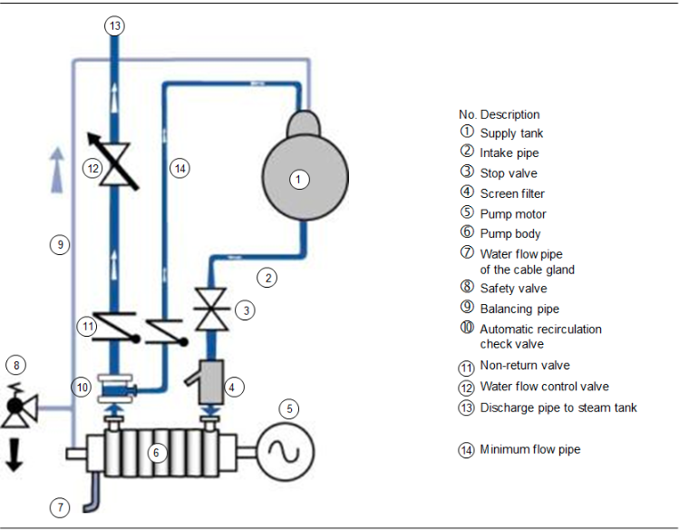
Fig. 7
Les pompes alimentaires (5) + (6) sont des pompes centrifuges multicellulaires à moteur séparé. Elles puisent l’eau par la canalisation d’aspiration depuis la bâche alimentaire (1) (à pression atmosphérique) pour alimenter le ballon de vapeur de la chaudière (à 42 bars) par l’intermédiaire de la canalisation de refoulement (13). L’eau est filtrée à l’aspiration par un filtre à tamis (4) qui évite l’introduction de débris (perles de soudures…) dans le corps de pompe (6).
Lorsque la vanne de régulation (12) se ferme et que le débit principal est proche de zéro, l’énergie mécanique transmise à la pompe par le moteur est convertie en énergie thermique (chaleur). Cette dernière vaporise l’eau qui stagne dans le corps de pompe.
Ce phénomène entraîne une usure prématurée de la pompe. Pour l’éviter, on laisse circuler une faible quantité d’eau qui contribue à refroidir la pompe dans la canalisation de débit minimum (14). Le débit minimum est réglé par la soupape de retenue à circulation automatique (10).
Lorsque la pompe fonctionne, les forces qui s’exercent de chaque côté des roues de la pompe sont différentes, elles sont plus élevées du côté refoulement que du côté aspiration. Ceci tend à plaquer les roues vers le côté aspiration. Il en résulte une usure et un échauffement important par frottements.
Pour limiter l’échauffement, on laisse circuler, en permanence, un débit d’eau dans la canalisation d’équilibrage (9) depuis la pompe (5) vers la bâche alimentaire (1). Ce débit permet d’équilibrer les forces de chaque côté des roues.
En fonctionnement cette canalisation doit donc rester ouverte, en cas de fermeture accidentelle, un échappatoire est possible par la soupape de sûreté (8) (réglée à la pression recommandée par le fabricant).
Lubrification et refroidissement des pompes alimentairesLes roulements de la pompe alimentaires sont lubrifiés par de l’huile. Il faut surveiller le niveau et la température de l’huile. Le niveau d’huile est visible au travers d’un graisseur en verre qui doit être rempli aux deux tiers.
La température du bain d’huile est inférieure à 70 °C lors du fonctionnement de la pompe (selon les recommandations du constructeur).
L’intervalle entre deux vidanges peut être de 6 à 12 mois. Il faut respecter la qualité de l’huile, notamment sa viscosité. Dans tous les cas, il est nécessaire de consulter les recommandations du constructeur.
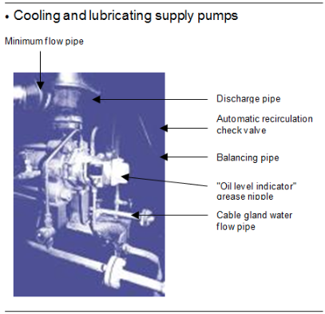
Fig. 8
Dans le cas où l’étanchéité de la pompe est assurée par des tresses, il faut refroidir les tresses par un écoulement continu d’eau vers l’extérieur. Cet écoulement est visible au niveau de la canalisation de refroidissement des tresses.
Une pompe centrifuge est caractérisée par :
La Hmt est la capacité à relever un liquide entre un point bas et un point haut.
Notions de pertes de charge et Hmt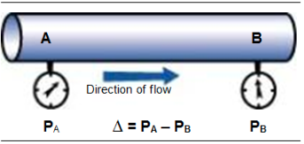
Fig. 9
Lorsque l’on met un fluide en circulation dans une canalisation, on constate qu’entre deux points A et B de la canalisation, la pression mesurée en A est supérieure à la pression en B. Cette différence de pression pA - pB, due aux frottements de l’eau dans la canalisation, est appelée perte de charge. Elle est indiquée en bars ou en mCE (1 bar est équivalent à environ 10 mCE). Il existe deux types de pertes de charge, les pertes de charge linéaires et les pertes de charge singulières. Les linéaires sont dues aux frottements dans les longueurs droites.
Les singulières sont dues aux accidents sur le parcours de l’eau (coudes, piquages…) et aux accessoires (filtres, vannes, clapets…) qui créent une résistance au passage de l’eau.
Ainsi, dans le circuit ci-dessous, pour que l’eau circule, il faut que la pression en A soit supérieure à la pression en B.
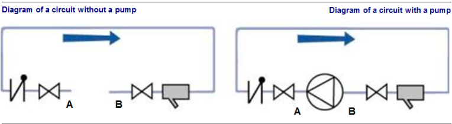
Fig. 10
Ajoutons une pompe à ce circuit afin de piloter le débit d'eau. Cette pompe doit surmonter les frottements et les pertes de charge.
Si l'on mesure la différence de pression entre les points de refoulement et d'aspiration de la pompe, il apparaît que :
\[ Pdécharge - Pintake = pA -pB \]
Cette différence est appelée hauteur manométrique totale ou Hmt de la pompe. Pour connaître la Hmt de la pompe, il suffit de mesurer Prefoulement et Paspiration et de calculer la différence entre ces deux pressions.
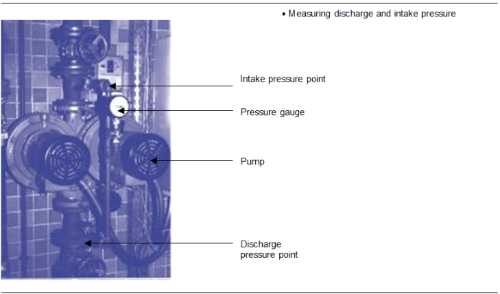
Fig. 11
Courbes caractéristiques débit-pression des pompes à vitesse de moteur constanteLe constructeur de la pompe donne une courbe de fonctionnement de la pompe (propre à chaque pompe). Cette courbe relie le débit et la pression (ou Hmt).
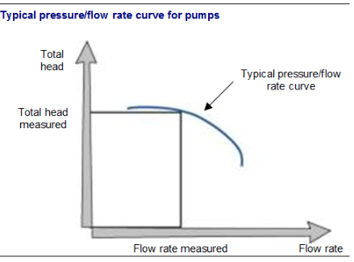
Fig. 12
En lisant la différence de pression, on peut donc en déduire le débit de la pompe. On note que la Hmt varie avec le débit. Une Hmt maximale mesurée correspond au débit le plus faible. Une Hmt minimale correspond au débit maximal.
Après quelques années, on peut aussi mesurer les deux paramètres, débit et pression, pour s’assurer que la pompe fonctionne toujours au point prévu par le constructeur et qu’il n’y a pas d’usure anormale.
Exemple de lecture de débitDans l’exemple suivant, la courbe est celle d’une pompe alimentaire SULZER MB 50-180/14.
Pour une mesure de Hmt de 66 bars, on lit 40 m3/h.
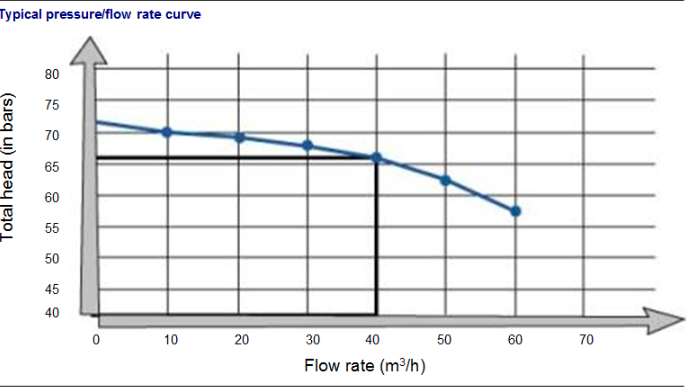
Fig. 13
On vérifiera le sens de rotation de la pompe. Une pompe qui tourne à l’envers continue à faire circuler l’eau dans le bon sens, mais ses caractéristiques de fonctionnement sont moins bonnes, le débit et le rendement sont médiocres.
On signalera les bruits suspects claquements, frottements. On vérifiera, dans le cas de pompe équipée de presse étoupe, l’écoulement régulier d’eau.
On surveillera la température des paliers inférieure à 80 °C en marche normale. On surveillera le niveau d’huile du graisseur. On vérifiera les pressions au refoulement et à l’aspiration garantes d’un débit correct. La pression à l’aspiration ne doit pas être trop basse sous peine de cavitation (transformation de l’eau en vapeur à l’aspiration entraînant la destruction de la pompe). Une chute de pression peut signifier un encrassement important des filtres et des canalisations à l’aspiration de la pompe.
Les démarrages et les arrêts brusques des pompes ont des conséquences dommageables tant pour le moteur que pour le réseau hydraulique. Ils entraînent des à-coups mécaniques endommageant l’accouplement pompe moteur.
Lors des phases de démarrage, on provoque un échauffement anormal des parties électriques du moteur lié à la surintensité de démarrage. Il faudra donc éviter de démarrer les pompes trop souvent, par exemple pas plus de douze fois dans une heure et attendre au moins 1 minute entre chaque redémarrage.
Les démarrages et les arrêts brusques entraînent des variations de pressions et de débits importants dans le réseau hydraulique provoquant des coups de béliers, ou choc de l’eau contre l’accessoire fermé trop rapidement. Les coups de béliers sont des ondes de choc qui se propagent le long des canalisations et qui peuvent causer sa destruction.
Le démarrage des pompes centrifuges peut être effectué :
Il existe différents types de pompes volumétriques :
Elles sont utilisées pour le dosage précis des produits de traitement d’eau sous des pressions très élevées.
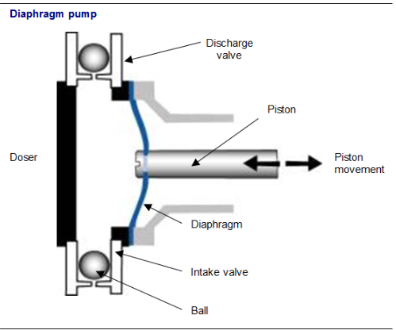
Fig. 14
Le piston décrit des allers et retours. La membrane solidaire du piston fait varier le volume dans le doseur. Cette variation du volume permet d’aspirer au niveau du clapet d’aspiration et de refouler le liquide pompé au niveau du clapet de refoulement.
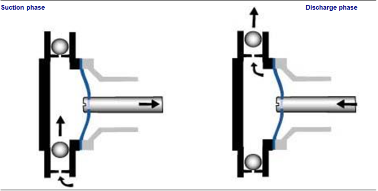
Fig. 15
Les pompes volumétriques sont caractérisées par :
Le débit injecté dépend :
Pour régler le débit d’injection, on peut donc jouer sur ces deux paramètres. Certains constructeurs de pompes proposent les deux paramètres réglables, d’autres un seul paramètre réglable (la course ou la cadence). Ces paramètres peuvent être modifiés par des boutons de réglage situés sur la pompe.
Prenons l’exemple d’une pompe doseuse dont nous pouvons régler la course et la cadence. Pour une injection de produit sous une pression de 3 bars, le constructeur nous donne une cylindrée égale à 0,1 cm3 pour une course réglée à 100\
Si l’on règle tous les paramètres au maximum, on obtient en 1 minute : 120 x 0,1 = 12 cm3 de liquide injecté.
En 1 heure : 12 x 60 = 720 cm3, soit un débit égal à 0,72 l/h.
Si la course est réglée à 50\ 0,72 x 50/100 = 0,36 l/h.
Si la vitesse avait été réglée à 60 allers-retours par minute, le débit suivant aurait été obtenu : 0,72 x 60/120 = 0,36 l/h alors que la course est maintenue à 100\
En effet, le débit est proportionnel à la course et à la vitesse. Le graphique montrant comment le débit varie avec la course est une ligne droite. Dans notre exemple de vitesse maximale, on obtiendrait le schéma suivant :
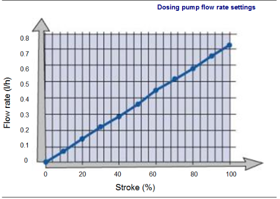
Fig. 16
Exemple de courbe de débit d’injection de la pompe doseuse précédente par réglage de course du piston à cadence fixe (120 coups par minute), pour une pression donnée :
On peut lire pour une course réglée à 40\
La pompe doseuse (1) aspire le produit à injecter dans le bac (2) par la conduite d’aspiration (3). Elle refoule le produit dans la canalisation (9) par la conduite de refoulement (8). La conduite (3) est équipée :
La conduite de refoulement est équipée d’une soupape de décharge qui protège la pompe en cas de surpression. Lorsque la pression monte en (8), la soupape s’ouvre et laisse passer un débit par la conduite de retour au bac (6).
Cette montée en pression peut être due :
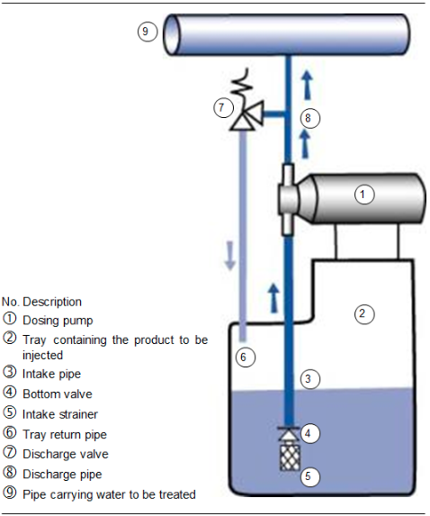
Fig. 17
Il faudra vérifier l’étanchéité des canalisations d’aspiration, de refoulement, ainsi que l’étanchéité des clapets de la pompe. On pourra de temps en temps nettoyer les clapets ainsi que la crépine d’aspiration où des dépôts (cristaux de sel dans le cas d’injection de saumure, voir module 14) peuvent se former.
Préparation de mise en route :
Important :
Quel que soit le type ou la taille d’une pompe volumétrique, le refoulement sera toujours ouvert complètement avant le démarrage sous peine d’avarie grave si le clapet de sécurité reste bloqué.
Une fois en fonction, s’assurer :
Elles sont utilisées pour les produits visqueux, comme la graisse, pour les produits abrasifs, tel que le lait de chaux, et pour les produits corrosifs, tels les produits chimiques. Principe : le fluide à pomper est déplacé dans un tuyau déformable qui est pincé par un galet. Ce galet, en roulant ou en glissant sur le tuyau, fait avancer le fluide.
Elle sert pour des produits visqueux, telles que les boues, jusqu’à 40\ Une tige en forme de queue de cochon tourne dans un cylindre en matière déformable, comme du caoutchouc.
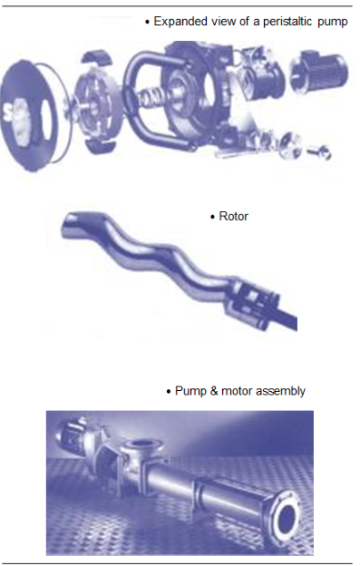
Fig. 18
Elle sert pour des produits très visqueux telles que les boues très chargées et aussi la chaux. Elle ressemble à une pompe centrifuge, sauf que le fluide est mis en mouvement par frottement entre deux disques métalliques et non pas par des aubes de roue, d’où son nom d’« entraînement visqueux ».
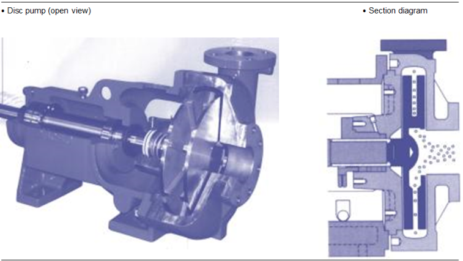
Fig. 19
Comme pour les pompes dans le cas de liquide, les ventilateurs sont utilisés pour mettre un gaz en mouvement.
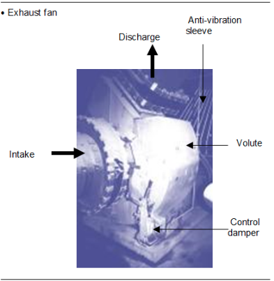
Fig. 20
Les ventilateurs d’air primaire et d’air secondaire apportent l’air nécessaire à la combustion.
Le ventilateur de tirage raccordé au conduit des gaz de combustion permet l’évacuation des produits de combustion, il maintient aussi la dépression à l’intérieur du four. Le ventilateur est composé :
À l’intérieur de la volute se trouve une roue à aubes entraînée en rotation par un moteur. L’air est aspiré parallèlement à l’axe de rotation et refoulé perpendiculairement.
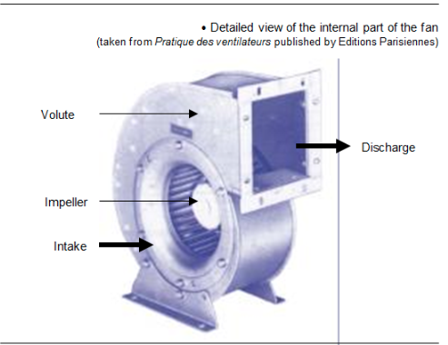
Fig. 21
Il existe plusieurs types de roues qui dépendent du sens d’inclinaison des aubes :
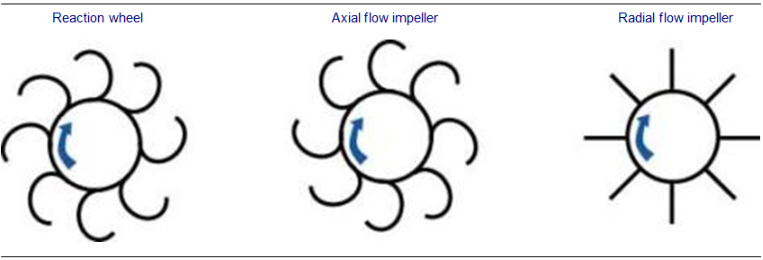
Fig. 22
La roue est entraînée par un moteur. L’accouplement du moteur et du ventilateur peut être un accouplement direct ou par système poulie courroie.
Le débit du ventilateur d’extraction est réglé par inclinaison de ventelles situées à l’aspiration du ventilateur. Elles créent ainsi un obstacle au passage de l’air.
Mais ce système de ventelles est de plus en plus remplacé par un sytème électronique, variateur de fréquence, qui fait varier la vitesse de rotation du ventilateur.
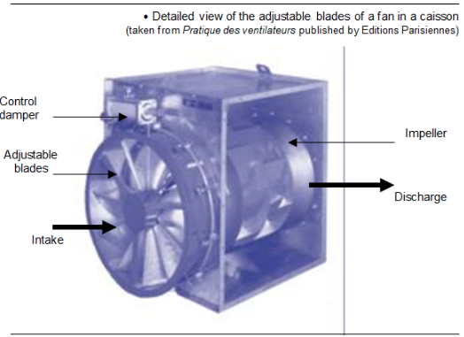
Fig. 23
Il est important de vérifier que le ventilateur la roue peut tourner librement avant le démarrage. Ce point peut
Avant la mise en service, il faut s’assurer que rien ne gêne la libre rotation de la roue du ventilateur. Cette vérification peut être réalisée manuellement en faisant tourner la ligne d’arbre. Elle doit tourner sans point dur.
Lors de la mise en rotation du ventilateur, il faut contrôler :
Lors de la mise en route, il est préférable de démarrer avec les ventelles inclinables en position fermées.
Pour assurer le meilleur fonctionnement possible du ventilateur, il est nécessaire d’effectuer périodiquement un entretien. Une fois par an, lors de l’arrêt technique, on nettoiera soigneusement l’intérieur de l’enveloppe du ventilateur, la roue, les gaines de raccordement. On enlèvera la graisse usagée pour la remplacer par de la graisse neuve. On contrôlera visuellement l’absence de corrosion et d’usure. Dans le cas d’un entraînement par courroies, on pourra vérifier l’état d’usure, de détérioration et la tension des courroies. Dans le cas d’une détérioration ou d’une usure, on remplacera tout le jeu de courroies.
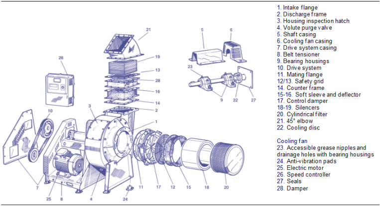
Fig. 24
Les aspects théoriques des pertes de charge des ventilateurs sont les mêmes que pour l’eau et les pompes. Ainsi, tout accessoire installé sur le parcours de l'air crée des pertes de charge. Dans un accessoire qui s'encrasse, la résistance au passage de l'air augmente. Si l'on veut toujours faire circuler le même débit dans un équipement qui s'encrasse, alors la perte de charge augmente.
Dans le schéma suivant nous pouvons voir comment évolue la pression relative (cf. module 5) dans une installation depuis la fosse de réception des déchets jusqu'à la sortie des gaz de combustion au niveau de la cheminée. En haut on retrouve les principaux équipements d'une usine d'incinération des déchets dangereux ; en bas un graphique qui représente l'évolution des pressions au passage dans ces équipements.
Le graphique présente deux axes principaux :
L'évolution des pressions est représentée par des segments de droite en gras. Par exemple au point C à l'intérieur du four on peut lire sur le graphique en bas une valeur de pression de – 0,3mbars (ou encore -3 mmCE) inférieure à la pression atmosphérique.
L'air est aspiré au niveau de la fosse par le ventilateur d'air primaire. Dans la fosse la pression est proche de la pression atmosphérique (ou légèrement inférieure pour éviter la pollution de l'environnement). On mesure donc une pression relative nulle (ou légèrement négative). L'air circule de A vers B par la gaine d'aspiration jusqu'au ventilateur. En A se trouve une grille d'aspiration.
La gaine et la grille créent une perte de charge. La pression en B est alors plus faible qu'en A plus faible que la pression atmosphérique soit une dépression ou pression de valeur négative. Le ventilateur aspire l'air en C et pousse cet air dans le four rotatif jusqu'à une pression en D de + 80 mmCE au-dessus de la pression atmosphérique. La Hmt du ventilateur d’air de combustion est ici + 105 mmCE. Nous avons étudié dans le module 5 la nécessité de maintenir une valeur de dépression (située entre – 3 et – 7 mmCE au-dessous de la pression atmosphérique) dans le four. Le ventilateur de tirage assure cette dépression ; c'est lui qui en aspirant les gaz de combustion crée cette dépression.
Les gaz de combustion avant d’arriver au ventilateur d’extraction passent au travers des surchauffeurs, des économiseurs, des systèmes de traitement des gaz de combustion qui créent des pertes de charges. Ces pertes de pression seront d’autant plus élevées que la chaudière sera encrassée. Un encrassement trop important de la chaudière provoque l’arrêt de la ligne car le ventilateur ne peut plus maintenir le débit nécessaire sinon on augmente l’énergie requise et comme le moteur est limité en capacité il peut s’arrêter par échauffement trop important ou par surintensité. La pression diminue alors depuis le four en C jusqu’à l’aspiration du ventilateur en G.
Cette différence de pression entre G et C ici 300-3 = 297 mmCE correspond à la valeur de la perte de charge dans le cas où il y a un filtre à manches. Si le traitement des gaz n’est constitué que d’un électrofiltre la perte de charge sera beaucoup moins grande.
Les gaz sont alors sont refoulés par le ventilateur vers les laveurs à + 100 mmCE. Arrivés à la cheminé, la pression au refoulement est toujours supérieure à la pression atmosphérique (ici de 25 mmCE) pour assurer une vitesse minimale de sortie des gaz.
On notera que les ventilateurs servent à augmenter la pression depuis l'aspiration jusqu'au refoulement. Cette différence de pression (Prefoulement – Paspiration) est appelée hauteur manométrique totale (ou Hmt) du ventilateur. Le ventilateur d'extraction/tirage aspire l'air à une pression égale à – 300 mmCE au-dessous de la pression atmosphérique pour la souffler à + 100 mmCE la Hmt vaut 400 mmCE.
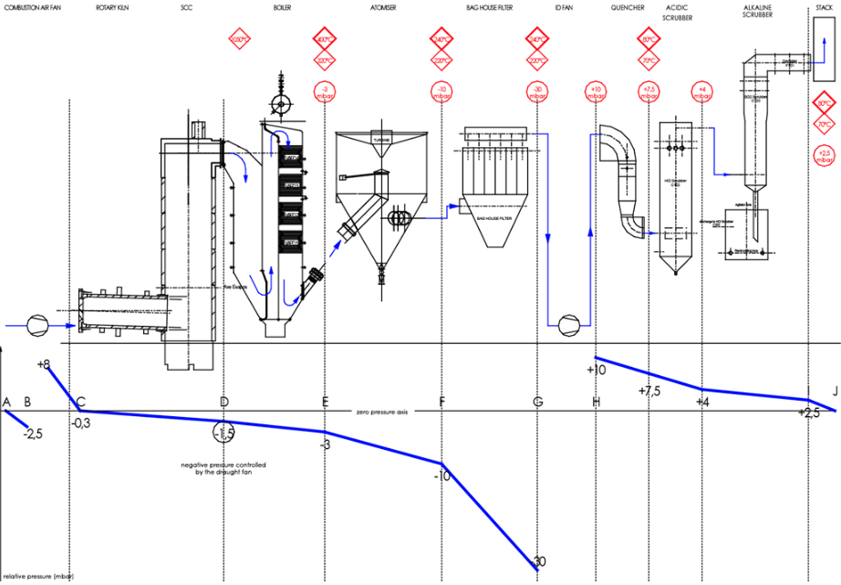
Fig. 25